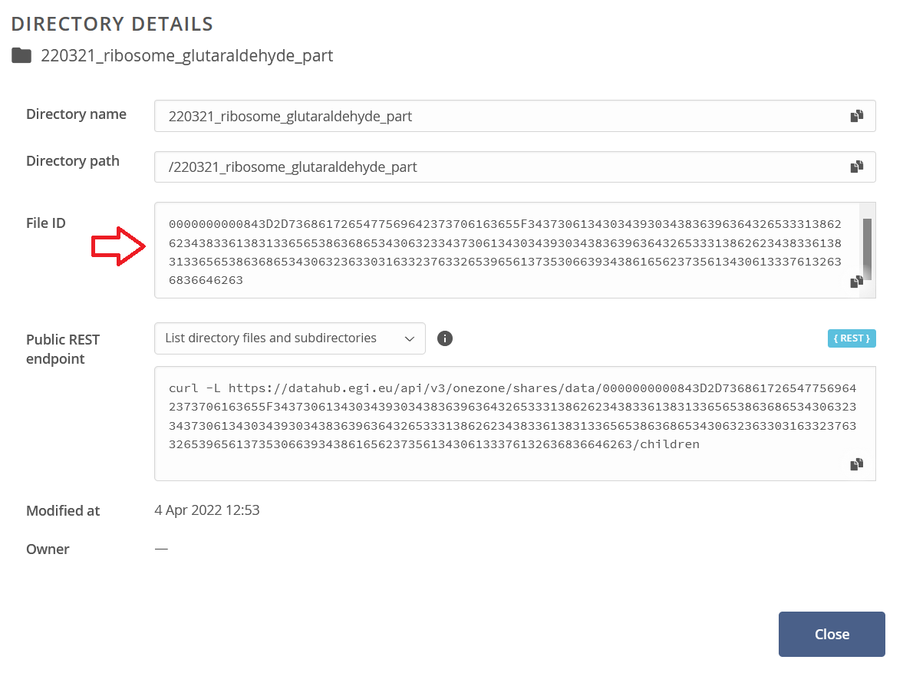

2. Batch dataset download
There is a simple posibility to download whole dataset at once from command line interface (CLI) with pripared one-file Python script. For using this script for download the required data tha data has to be shared - a URL accessible without login should exists. Example of such URL: https://datahub.egi.eu/share/c01c27c2e9ea750f948aeb75a40a37a2ch6dbc.
Warning
Only spaces which are shared can be downloaded by this script.
Every shared object (space, directory or file) have its own unique identifier (File ID). If you know the file ID you can download the object.
2.1. How to get file identifier
When you access the URL by your web browser, you can found File ID by right click on the name of a space/directory/file in pop-up menu item Information.
{kind=link}
File ID is a long string as you can see bellow.
{kind=link}
Warning
File ID which you can see when you are log in Onedata system is different from File ID mentioned above.
2.2. Usage of the script
2.2.1. Prepare environment
To run this script you need Python 3 installed with module requests. For installing Python 3 please visit https://www.python.org/downloads/. Module requests can be installed by command:
pip3 install -U requests
The script itself can be downloaded from public repository https://raw.githubusercontent.com/CERIT-SC/onedata-downloader/master/download.py. You can do it e.g. with curl:
curl -s --output download.py https://raw.githubusercontent.com/CERIT-SC/onedata-downloader/master/download.py
2.2.2. Download data
If you have pripared environment, you can download the data. Run the script in following way and replace argument FILE_ID with the identifier of desired object.
python3 download.py FILE_ID
Script download whole object with given File ID to the recent directory. The script print information about progress of download or possible errors. Run the script with argument -h for print help:
python3 download.py -h
2.2.3. Advance tips
You can make the file with script executable and run it directly by its name:
# change file permission
chmod u+x download.py
# now you can run the script in this way
./download.py FILE_ID
The script can be used directly from its repository without need to download it.
curl -s https://raw.githubusercontent.com/CERIT-SC/onedata-downloader/master/download.py | python3 - FILE_ID